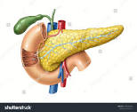
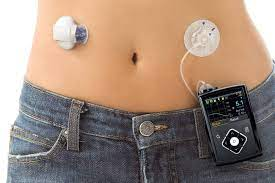
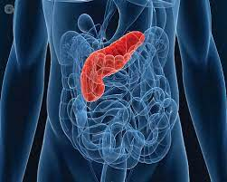

| Características | |
| Un trasplante de páncreas es un procedimiento quirúrgico que consiste en colocar un páncreas sano de un donante fallecido en una persona cuyo páncreas ya no funciona correctamente. El páncreas es un órgano que se encuentra detrás de la parte baja del estómago. Una de sus principales funciones es producir insulina, una hormona que regula la absorción de azúcar hacia el interior de las células. Si el páncreas no produce suficiente insulina, los niveles de glucosa en la sangre pueden elevarse a valores poco saludables, lo que produce diabetes tipo 1. |  |
| Técnica para su fabricación del pancreas | |
| Un monitor continuo de glucosa o CGM lleva un registro de la concentración de glucosa en la sangre cada pocos minutos mediante un pequeño sensor que se inserta debajo de la piel. El sensor envía la información de forma inalámbrica a un programa almacenado en un teléfono inteligente o en una bomba de infusión de insulina. El programa calcula cuánta insulina se necesita y envía una señal a la bomba de infusión de insulina cuando debe administrarse. La bomba de infusión de insulina administrará pequeñas dosis de insulina a lo largo del día cuando las concentraciones de glucosa en sangre no estén dentro de su rango objetivo. Hay diferentes tipos de bombas de insulina. |  |
| Beneficios y propuestas de mejora | |
| Un páncreas artificial podría ayudar a las personas con diabetes tipo 1 a alcanzar sus concentraciones de glucosa en la sangre objetivo y a mejorar su calidad de vida. Con un sistema de páncreas artificial, se monitorean continuamente las concentraciones de glucosa del paciente. El programa computarizado mejora el control de la glucosa en la sangre ajustando automáticamente la cantidad de insulina que administra para mantener las concentraciones de glucosa en la sangre dentro del rango. El sistema le ayuda al paciente a evitar la hipoglucemia y la hiperglucemia. Los médicos pueden monitorear las dosis de insulina de forma remota y recomendar ajustes de las dosis para las personas que necesitan una mayor supervisión. |  |
Opinion |
| Mi opinión sobre la fabricación de órganos para trasplantes es que es un gran avance en la medicina y que puede salvar muchas vidas. La escasez de órganos donados es un problema grave en todo el mundo y limita la cantidad de trasplantes que se pueden realizar sin embargo, es importante reconocer que la fabricación de órganos todavía está en sus etapas iniciales de desarrollo y hay muchos desafíos técnicos y éticos que deben abordarse. | |
Mie Carolina Obara Ramirez-2°C-Profesora=Maritza Diaz |
pagina web de juan 23 |